ECCV 2022
Learning Phase Mask for Privacy-Preserving
Passive Depth Estimation

Abstract
With over a billion sold each year, cameras are not only becoming ubiquitous, but are driving progress in a wide range of domains such as mixed reality, robotics, and more. However, severe concerns regarding the privacy implications of camera-based solutions currently limit the range of environments where cameras can be deployed. The key question we address is: Can cameras be enhanced with a scalable solution to preserve users' privacy without degrading their machine intelligence capabilities? Our solution is a novel end-to-end adversarial learning pipeline in which a phase mask placed at the aperture plane of a camera is jointly optimized with respect to privacy and utility objectives. We conduct an extensive design space analysis to determine operating points with desirable privacy-utility tradeoffs that are also amenable to sensor fabrication and real-world constraints. We demonstrate the first working prototype that enables passive depth estimation while inhibiting face identification.
Results
Depth Reconstruction from our Prototype Camera
Four example results from models trained with different sets of input attributes. For each example, the left image depicts the original image and the right image shows the result of CoarseNet + RefineNet. Hover over the buttons below to compare the results.

Original Image

Reconstruction
Original Image
Reconstruction
Effect of Input Sparsity
Four example results from the same model, but for inputs with different degrees of sparsity (% of SfM points kept). For each example, the left image shows the input sparsity and the right image shows the result of CoarseNet + RefineNet. CoarseNet and RefineNet were trained on depth, color and SIFT. Hover over the three buttons below to compare the results.
 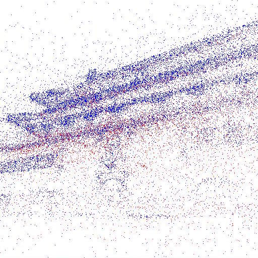
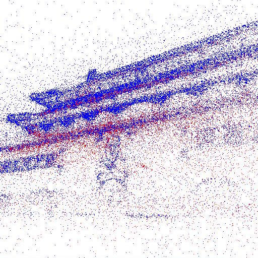
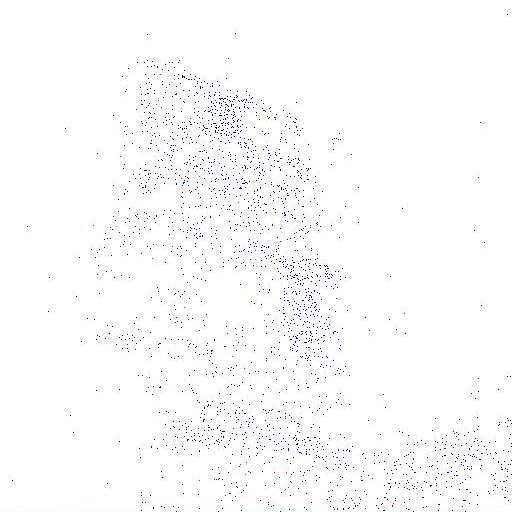
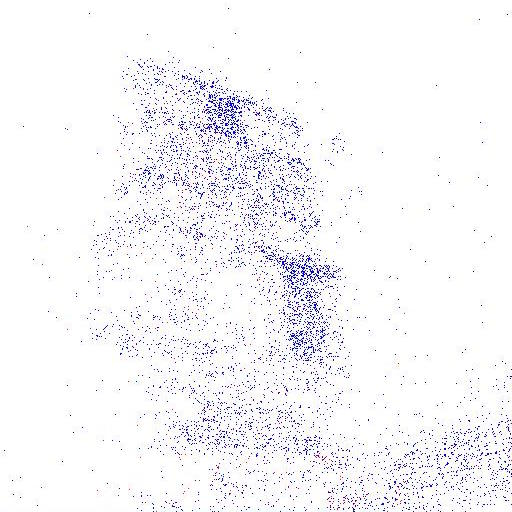
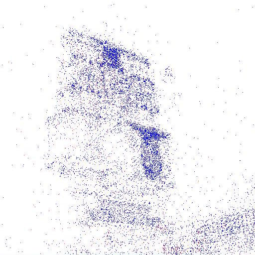
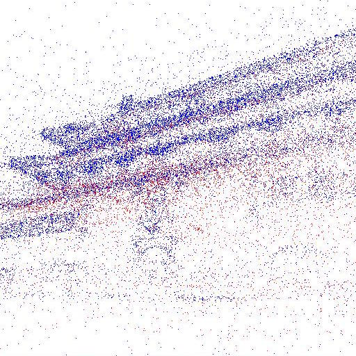
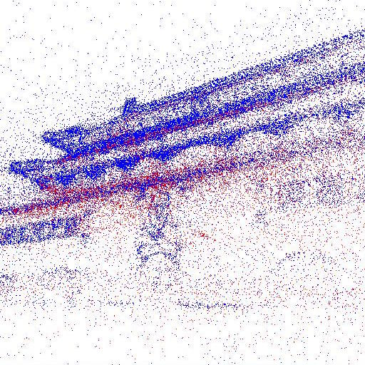
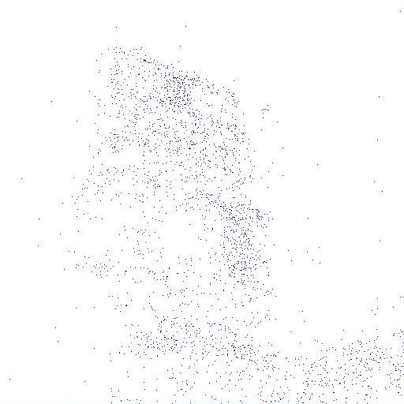
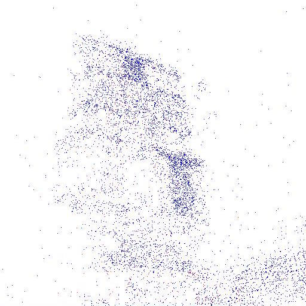
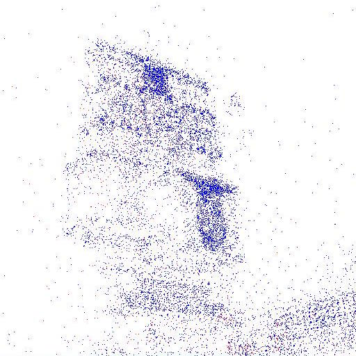
Input Points
Reconstruction
Input Points
 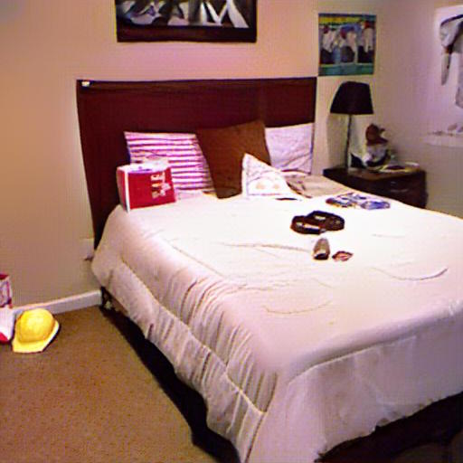
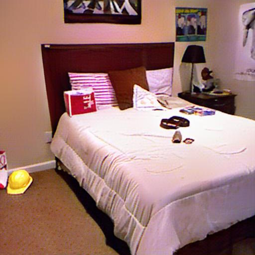
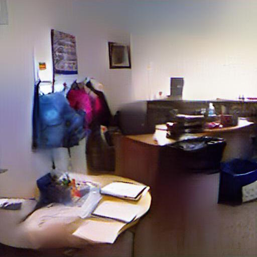
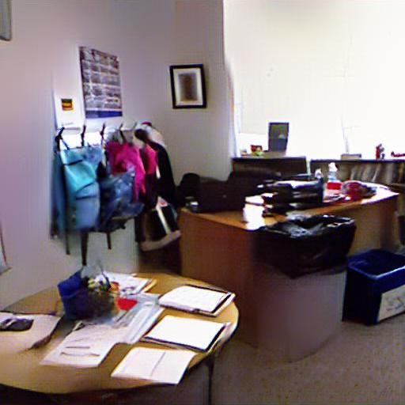
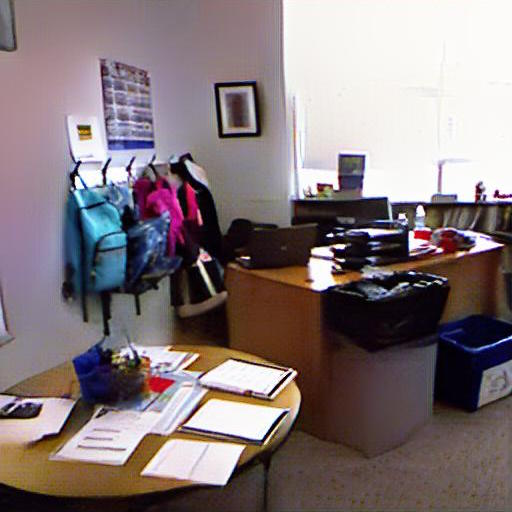
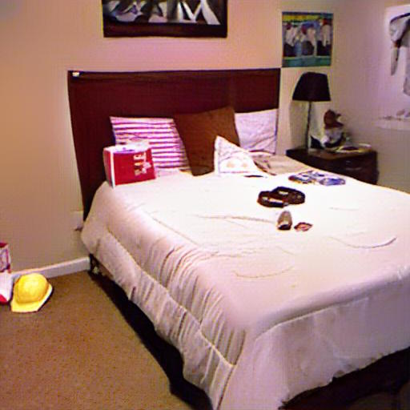
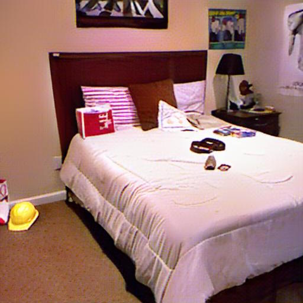
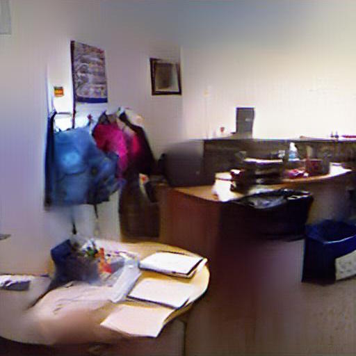
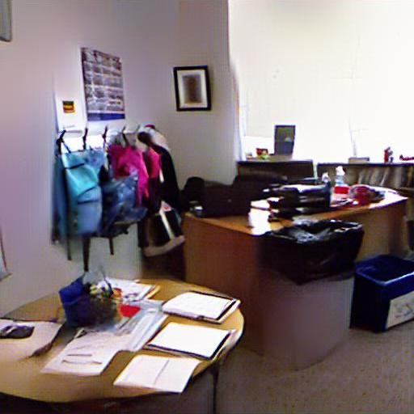
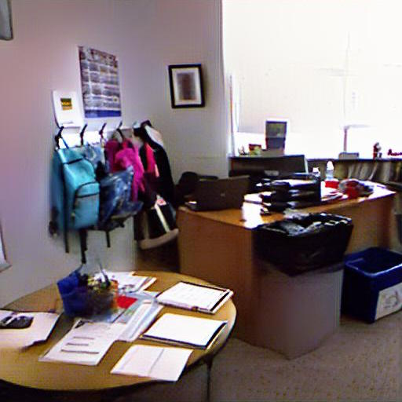
Reconstruction
Effect of RefineNet
Four examples comparing results from CoarseNet and CoarseNet + RefineNet. For each example, two images are shown. The left image is the result of a model trained on depth and SIFT as input attributes. The right image is the result of a model trained on depth, color and SIFT as input attributes. Hover over the two buttons below to compare the results.
Depth + SIFT
Depth + SIFT + Color
Depth + SIFT
Depth + SIFT + Color